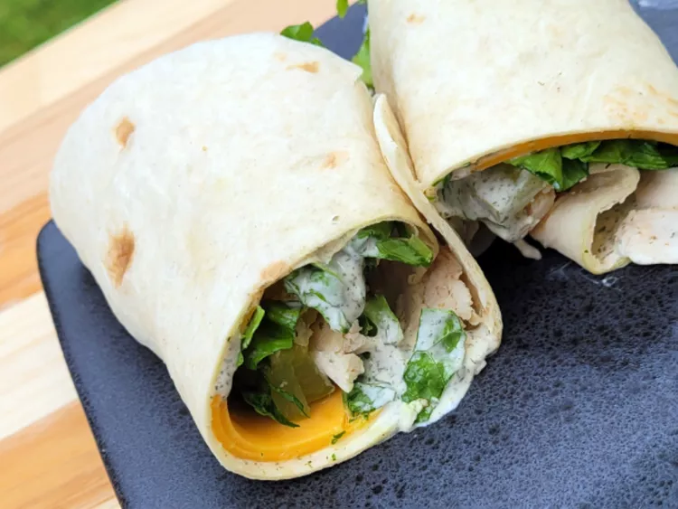

<!DOCTYPE html>
<html lang="en">
<head>
    <meta charset="UTF-8">
    <title>Dill Ranch Chicken Wraps</title>
</html>
<h1>Dill Ranch Chicken Wraps</h1>
 
<h3><em>Using precooked chicken, these dill chicken ranch wraps made with rotisserie chicken are so simple and flavorful, they will wake up your taste buds quickly.</em></h3>
<h2>Ingredients</h2>
<ul>
    <li>2 tablespoons mayonnaise</li>
    <li>2 tablespoons ranch dressing</li>
    <li>1 tablespoon dill pickle juice</li>
    <li>1 teaspoon dried dill</li>
    <li>2 (10 inch) flour tortillas</li>
    <li>4 slices sharp Cheddar cheese</li>
    <li>1 cup shredded lettuce</li>
    <li>4 kosher dill pickle sandwich slices</li>
    <li>1 cup cooked rotisserie chicken</li>
</ul>
<h2>Directions</h2>
<ol>
    <li>Stir mayonnaise, ranch dressing, dill pickle juice, and dill together in a small bowl.</li>
    <li>Warm tortillas in the microwave on High until warm and pliable, about 30 seconds.</li>
    <li>Spread half of the mayonnaise mixture down the center of each tortilla. In each tortilla, place 2 slices of sharp Cheddar cheese, 1/2 cup lettuce, 2 kosher pickle slices, and 1/2 cup of cooked chicken.</li>
    <li>Fold opposing edges of tortilla to overlap the filling. Roll 1 of the opposing edges around the filling into a wrap.</li>
</ol>

